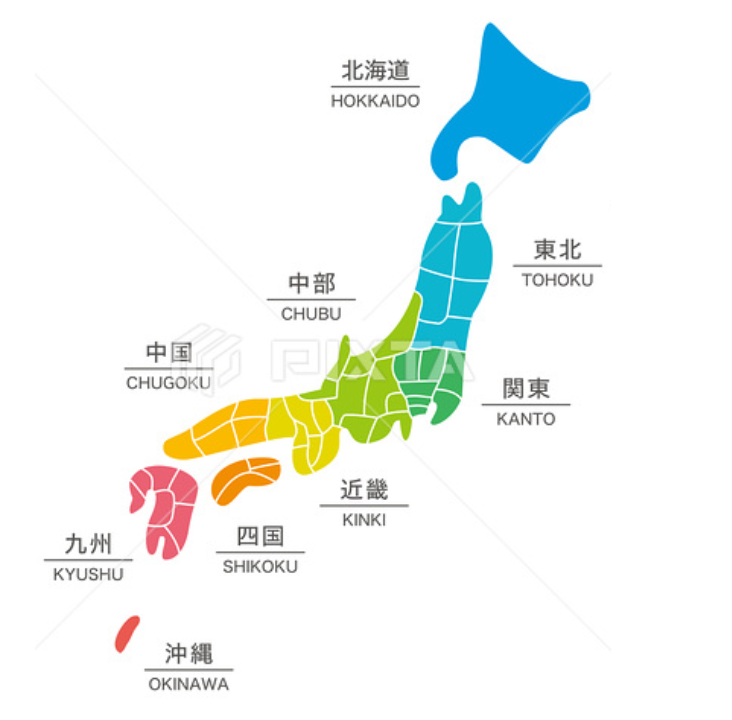

全日本主題樂園
選擇語言
北海道
東北地區
宮城縣
青森縣
福島縣
山形縣
秋田縣
岩手縣
關東地區
茨城縣
栃木縣
群馬縣
埼玉縣
千葉縣
東京都
神奈川縣
中部地區
山梨縣
長野縣
岐阜縣
靜岡縣
愛知縣
富山縣
石川縣
福井縣
新瀉縣
近畿地區
滋賀縣
京都府
大阪府
兵庫縣
奈良縣
三重縣
和歌山縣
中國地區
鳥取縣
島根縣
岡山縣
廣島縣
山口縣
四國地區
香川縣
德島縣
高知縣
愛媛縣
九州地區
福岡縣
佐賀縣
長崎縣
熊本縣
大分縣
宮崎縣
鹿兒島縣
沖繩縣
